Prague & Kutná Hora
June 3–7, 2023

From June 3 to 7, 2023 we were in Prague, with a day trip to Kutná Hora.
In Prague we walked Charles Bridge, Prague Castle, and Old Town around the Astronomical Clock. In Kutná Hora we visited St. Barbara’s Cathedral and the Sedlec Ossuary.


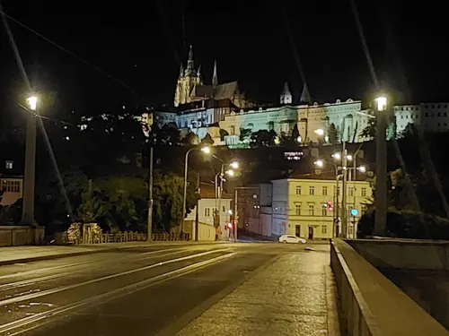

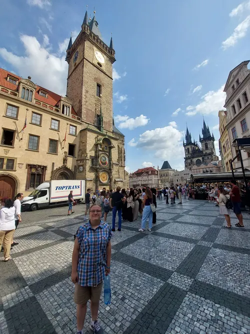

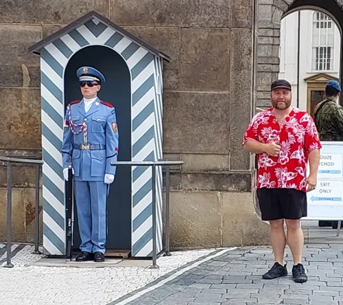

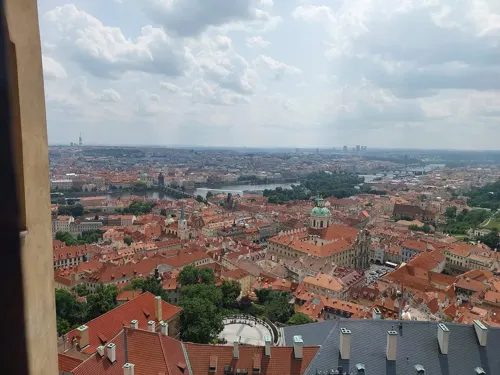

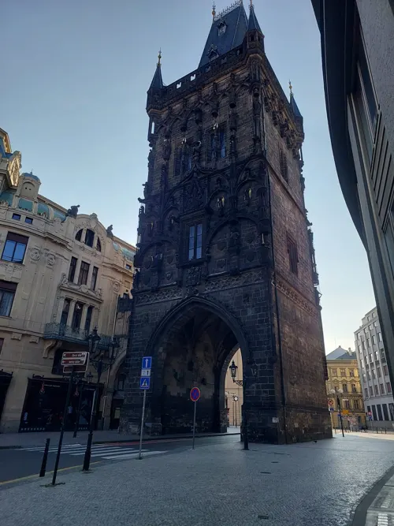

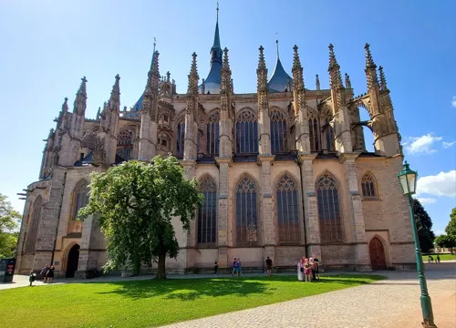

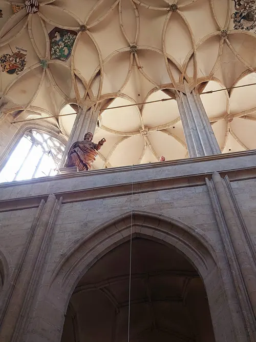

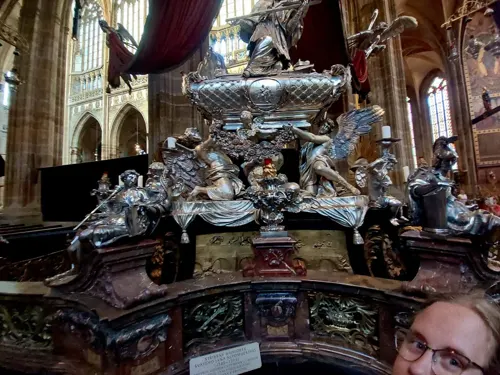

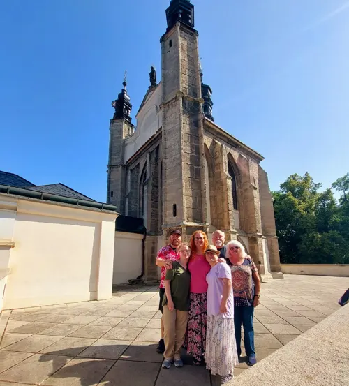

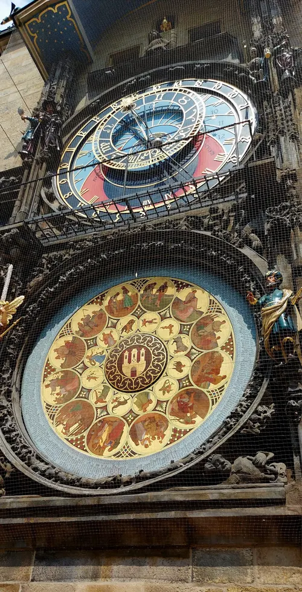

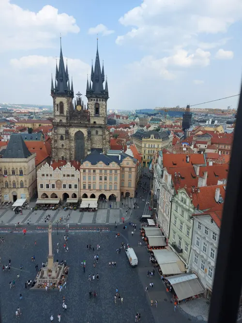

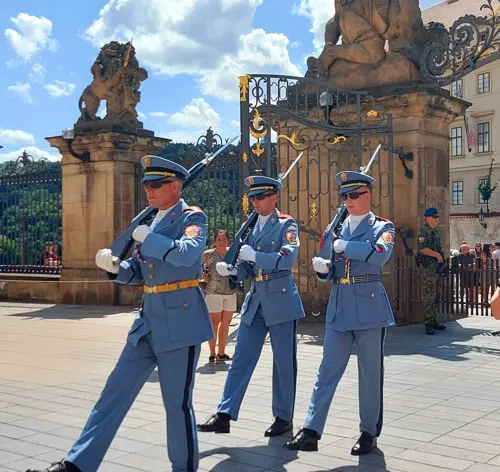